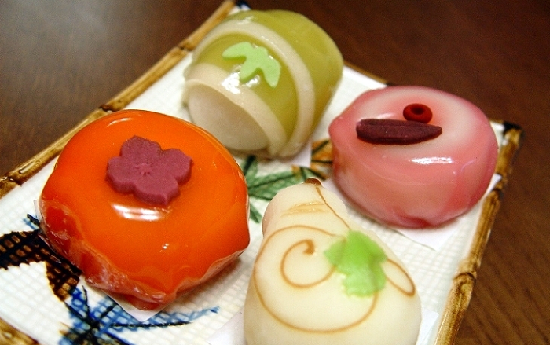
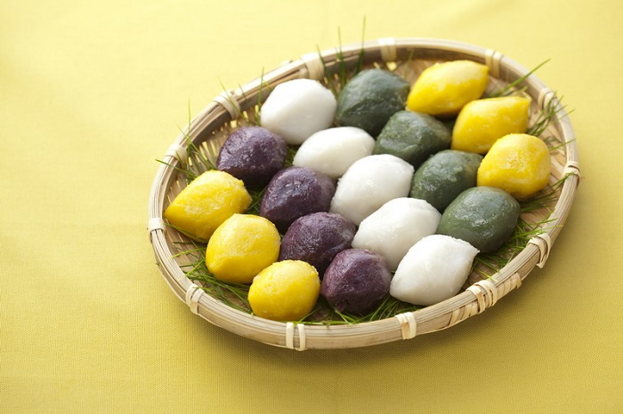
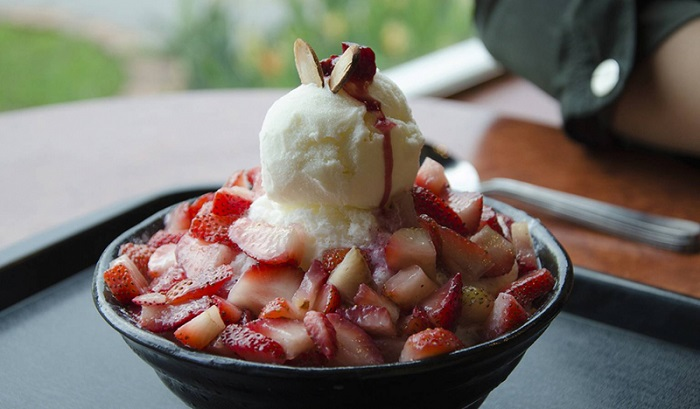
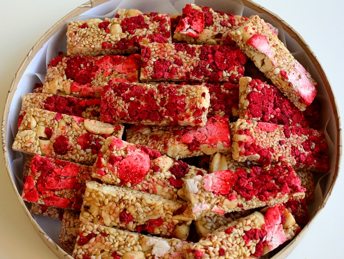
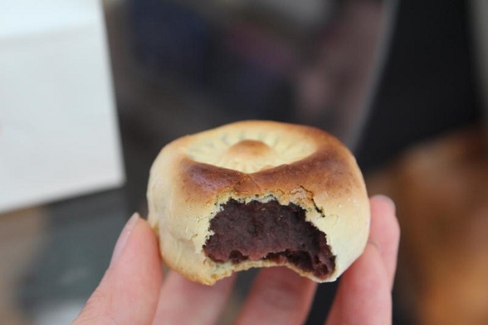
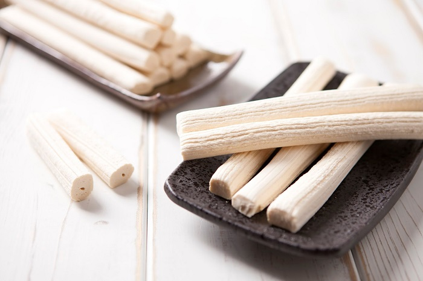
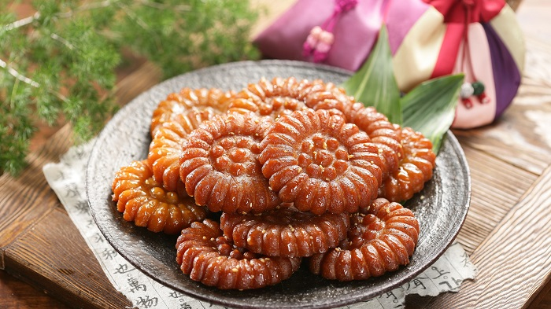

Du lịch Hàn Quốc
Welcome to Korea
Welcome to Korea
Món ăn tráng miệng Hàn Quốc đầu tiên mà chúng tôi muốn giới thiệu đến các bạn đó chính là Hwagwaja. Đây là một món bánh ngọt vô cùng nổi tiếng. Nó không chỉ có hương vị thơm ngon, hình thức đẹp mắt mà còn được xem như niềm tự hào của nền ẩm thực Hàn Quốc.
Trong tiếng Hàn, Hwagwaja có nghĩa là “bông hoa”. Và quả đúng như vậy, từng chiếc bánh đều được nhào nặn và trang trí khéo léo y hệt như một bông hoa. Bánh hwagwaja có kích thước to hơn những chiếc bánh mochi một chút. Nguyên liệu chính để làm món bánh này gồm bột gạo, đường, mật ong, đậu đỏ, khoai lang, hạt dẻ,… Trước đây, chỉ có giới thượng lưu Hàn Quốc mới có cơ hội thưởng thức hwagwaja. Tuy nhiên ngày này, nó đã trở nên phổ biến hơn và được rất nhiều người dân cũng như khách du lịch yêu thích.
Một loại bánh nữa cũng nằm trong danh sách những món ăn tráng miệng Hàn Quốc nổi tiếng nhất đó chính là bánh gạo Tteok. Loại bánh này có nguyên liệu và cách làm tương như như món tteokbokki truyền thống. Chỉ khác là những chiếc bánh sẽ màu sắc rực rỡ cùng hình dáng đẹp mắt hơn. Không chỉ vậy, Tteok còn được xem là một trong những loại bánh lâu đời nhất của Hàn Quốc, với lịch sử hơn 2000 năm. Thậm chí có hẳn một viện bảo tàng đã được mở để trưng bày những điều thú vị về bánh Tteok.
Nói đến những món ăn tráng miệng Hàn Quốc ngon và nổi tiếng nhất thì không thể không nhắc tới Bing Su. Nó được làm từ trái cây trộn cùng với kem, đá bào và nước sốt trái cây. Mặc dù chỉ mới du nhập vào đất nước này cách đây không lâu nhưng ngay lập tức Bing Su đã gây sốt trong giới trẻ Hàn Quốc. Món ăn này không chỉ sở hữu hình thức bắt mắt mà hương vị của nó còn tuyệt hảo vô cùng, khiến bất cứ ai đã nếm thử rồi đều phải mê mẩn. Nếu bạn có dịp du lịch Hàn Quốc nhất định phải thưởng thức món tráng miệng đặc biệt này nhé.
Kẹo Gangjeong là một món ăn tráng miệng Hàn Quốc khá nổi tiếng được làm từ gạo nếp. Người ta sẽ nghiền nhỏ gạo thành bột sau đó trộn cùng với mật ong, đậu phộng và cắt thành từng miếng nhỏ hình chữ nhật. Tiếp đến, bánh sẽ được chiêm qua chảo dầu và phủ lên trên nhiều vừng cùng một số loại hạt rực rỡ sắc màu. Với hương vị thơm ngon, hình thức lại đẹp mắt nên kẹo Gangjeong thường được lựa chọn mua làm quà biếu.
Món tráng miệng Hàn Quốc nổi tiếng tiếp theo mà bạn nên thưởng thức nếu có dịp đặt chân đến xứ củ sâm đó chính là Hwangnam Ppang. Đây là một loại bánh khá giống với bánh trung thu, với lớp vỏ mỏng được làm từ bột mì và trứng. Phần nhân bên trong thường được làm bằng đậu đỏ. Nó xuất hiện tại Hàn Quốc lần đầu tiên vào năm 1939 từ một tiệm bánh ở Gyeongju. Cũng chính vì vậy mà bánh Hwangnam Ppang còn được gọi với cái tên khác là “bánh mì Gyeongju”.
Kẹo mạch nha Yeot là một món tráng miệng rất được yêu thích ở Hàn Quốc. Nó sở hữu hương vị ngọt ngào vô cùng quyến rũ. Nguyên liệu chính để làm loại kẹo này là một gạo nếp, với hai phiên bản chính là kẹo mạch nha cứng và kẹo mạch nha mềm.
Ngoài nguyên liệu chính là bột gạo nếp, ở mỗi vùng của Hàn Quốc người ta lại cho thêm vào các loại nguyên liệu khác nhau. Nếu như ở Pyeongchang, bánh có vị ngô thì ở Ulleong-do, bánh lại sở hữu vị bí ngô khá đặc biệt,…
Yakgwa là một món ăn tráng miệng Hàn Quốc vô cùng thơm ngon mà bạn không nên bỏ lỡ. Món bánh này sở hữu hình dáng xinh xắn, bắt mắt tựa như những bông hoa tuyệt mỹ. Người ta làm bánh Yakgwa từ bột mì, dầu vừng, mật ong và nước gừng. Tất cả các nguyên liệu kết hợp với nhau hết sức hài hòa, tạo nên một món bánh thơm ngon, khiến bất cứ tín đồ ẩm thực nào cũng phải thổn thức.
GỢI Ý TOUR DU LỊCH HÀN QUỐC |
|---|
>> Du Lịch Hàn Quốc: Hà Nội – Seoul – Lotte World – Trượt Tuyết Jangjipine 5 Ngày Trượt Tuyết Bay Jeju Air chỉ với 12.500.000 đồng
|
Jeonggwa còn được gọi là hoa quả ướp đường. Món ăn này hớp hồn mọi thực khách không chỉ bởi hương vị độc đáo mà còn bởi những màu sắc rực rỡ bắt mắt. Đó là vì Jeonggwa được làm từ nhiều loại trái cây khác nhau như: cam, xoài, kiwi, dứa,… Các loại hoa quả sẽ được cắt thành từng lát mỏng sau đó sấy khô.

Trên đây là một số món ăn tráng miệng nổi tiếng của Hàn Quốc mà chúng tôi muốn giới thiệu. Nếu một ngày nào đó có dịp đặt chân đến xứ sở kim chi bạn nhất định phải nếm thử chúng nhé. Đừng quên theo dõi những tin tức du lịch Hàn Quốc mới nhất của chúng tôi.
Top 20 điểm tham quan nhất định phải ghé thăm trong hành trình chinh phục Seoul

Điện thoại: 0903357616
Email: thaontps24690@fpt.edu.vn